Jovens e adultos a partir de 14 anos
Com autismo (suporte nível 1 e 2), síndrome de Down, deficiência intelectual ou TDAH.
Educação musical anticapacitista em Porto Alegre. Cinco meses de estúdio, repertório próprio e um show ou vídeo no fim, com cada aluno no centro do próprio som.
Pra quem é
Jovens e adultos neuroatípicos que querem tocar em grupo, e as famílias que buscam um espaço de arte, e não de reabilitação.

Com autismo (suporte nível 1 e 2), síndrome de Down, deficiência intelectual ou TDAH.
O primeiro contato com os instrumentos é livre, sem rigor técnico. A técnica vem depois, no ritmo de cada um.
Turmas reduzidas, para que cada um tenha espaço e atenção, num estúdio profissional, entre parceiros de música.
Por muito tempo, a prática musical de pessoas com deficiência foi vista só como reabilitação. O acompanhamento terapêutico tem o seu lugar. Aqui, a música é expressão artística e protagonismo.
O participante é acolhido em suas demandas terapêuticas
Estimula a resposta sensorial e emocional à música
Busca o ganho funcional para o dia a dia
O participante é reconhecido como músico e integrante de banda
Ensina a regência, a divisão de oitavas e o tempo da banda
Termina com uma entrega artística: show ou vídeo
Desenho Universal para Aprendizagem, métodos visuais e tecnologias assistivas para que a neurodivergência apareça como assinatura estética, e não como barreira.
Participante e família entram juntos, conhecem os instrumentos e se ambientam. Primeiro, sentir-se seguro.
Um quadro de rotina no início da aula traz previsibilidade: todos sabem o que vem a seguir.
Experimentar e se divertir antes de qualquer exigência técnica. Entrar no universo da música primeiro.
Conversa e observação para mapear a identidade sonora de cada um. A partir daí, o repertório nasce.
Cinco meses de prática coletiva no estúdio do Espaço Juntô, com equipamento profissional: experimentar os instrumentos, montar o repertório e ensaiar junto, como toda banda.
Um show aberto para a família e a comunidade, ou um vídeo da banda. É a dignidade de um trabalho de adulto, feito com o próprio som.
No caminho, conforme o ciclo
[VÍDEO DO ENSAIO ABERTO · ENTRA DEPOIS DE 11/12]
Músico e produtor, bacharel em Música e formado em Psicologia. Há mais de 10 anos trabalha com adultos neuroatípicos e suas famílias em Porto Alegre. Criou a Multifônica para que esses músicos tenham um lugar de banda, palco e autoria.
Antes da Multifônica, trabalhou na APAE e na AFAD de Porto Alegre, com autonomia, profissionalização e atividades da vida prática de pessoas com deficiência. A música o transformou, e ele viu nela um caminho para esses músicos também.
“Eu acredito que todos podem fazer música. O principal está em acreditar e ter coragem de colocar a galera pra tocar.”
[DEPOIMENTO REAL DA ANDRESSA CASTRO, ACOMPANHANTE TERAPÊUTICA DE UMA ALUNA]
Cinco meses de vivência no estúdio do Espaço Juntô, na Rua Felipe de Oliveira, 323, na divisa entre Santa Cecília e Petrópolis, em Porto Alegre.
Turma manhã
16/02
Terças, das 10h às 11h45 · Cinco meses · Novos alunos passam por um nivelamento
Turma tarde
A confirmar
Dia e horário em confirmação com o estúdio · Cinco meses · Turma nova, aberta a iniciantes
Em 2027, os 5 meses passam a custar R$ 3.500. Quem garante a vaga até 07/12 paga o valor deste ano.
R$ 3.500
R$ 3.000
ou 6x de R$ 500 (inscrição + 5 parcelas)
Condição válida até 07/12/2026, às 23h59
Pagamento: Pix, cartão ou PagBank
Não. O primeiro contato é livre, sem rigor técnico. Cada aluno descobre o instrumento e a forma de tocar que fazem sentido para ele.
Não. É educação musical: o aluno é reconhecido como músico e integrante de banda, e o ciclo termina com uma entrega artística. A musicoterapia tem outro objetivo e pode seguir em paralelo.
Sim. A chegada é feita junto com a família, para conhecer o espaço e os instrumentos sem pressa. [CONFIRMAR: acompanhante durante as aulas]
Sim. A metodologia trabalha com neurodivergências como autismo, síndrome de Down e TDAH, pela prática de banda.
Turmas reduzidas, para que cada um tenha espaço e atenção. [A CONFIRMAR: 3 a 4 ou 3 a 8]
[CONFIRMAR COM O GUILHERME]
R$ 3.000 à vista ou 6x de R$ 500 (inscrição + 5 parcelas), por Pix, cartão ou PagBank.
Fale com o Guilherme pelo WhatsApp e tire suas dúvidas sobre as turmas de 2027.
Conversar no WhatsAppBlack NovemberR$ 3.500 R$ 3.000 ou 6x de R$ 500